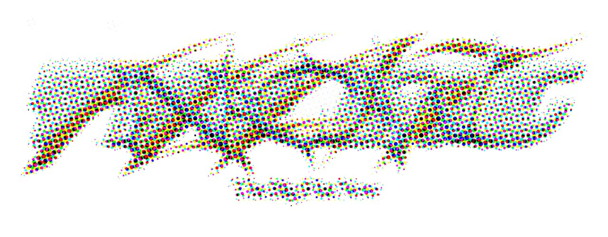

We regret to inform you that there is no future. Nor is there a past. Music, art, technology, pop culture, and fashion have evaporated as well. There is only one thing left: THE BIG FLAT NOW.
July 16, 2018
When Apple released the iPhone X in November last year, it created a totemic metaphor for the nature of our time. By removing the home button and the frame that once surrounded the screen, the phone’s surface became unbounded and limitless. The message was clear: there is no longer a boundary between your screen and the world around it.

As we look around the modern world, we see the ghosts of other conventional distinctions, which now appear as arbitrary as the borders on our phones. On the internet, the gap between next door and next continent implodes. Northern Baroque paintings, Triassic fossils and yesterday’s op-eds are tabs on the same browser. Raised by a global chorus of voices, our identities are voluntary, malleable and unprescribed. We are everywhere, anytime and everyone at once.
Along with architect Jack Self and graphic designer Jonathan Castro, 032c devoted the cover story of its summer issue to mapping a new cultural moment we call The Big Flat Now. This terrain is already a platform for new forms of creativity, upvoted into existence by the same mass who invented them. In this ecosystem, gesture, friendship and amateurism have replaced jargon, messaging and expertise. Product design has become a form of DJing — and DJing has become a form of product design. Contemporary art and luxury fashion have come to operate according to the same logic, sharing practitioners who glide freely between each field. Film, music, fashion, visual art and the marketing machines that support them have been compressed into a unified slime called “content.”
The Big Flat Now changes the languages we must use to describe the things, places and people that move through the creative industry. The name of this concept was born during a visit to the studio of Sterling Ruby, in which it became clear that the past mode of culture did not have the vocabulary to describe a practitioner who exhibits art, creates store architecture for Calvin Klein, takes apart battleships and designs clothes — among many other things.
This season, Louis Vuitton presented its first menswear collection by Virgil Abloh, proving that its decision to hire a designer-slash-DJ-slash-artist who trained as an architect could not be more apt. Likewise, it would be naive to call the Fondazione Prada a “museum,” but it would equally cynical to call it “marketing.” The answer now lies somewhere in between.
Some voices, especially those who prognosticate about the internet being the end of culture, have confused The Big Flat Now with postmodern irony. They describe this new order’s cultural products as collages that simply push around pre-existing references. However, there is nothing inherently inauthentic or cynical about this activity.
The early days of the mainstream internet were dominated by mashups and remixes, but creative license in the era of The Big Flat Now is about being both at once. The spirit of the mash-up was driven by the novelty of seeing two unexpected things appear side by side, as well as the pseudo-countercultural act of intervening in pop culture. The humor of this gesture falls flat for Generation Z, whose unparalleled degree of visibility and cultural access makes irony feel cheap. Where remixing is part of a dialogue about the zeitgeist, the condition of being both is strictly about the future. It describes a reality in which we can all own new space, rather than competing to replicate the status quo.
While past modes of communication relied on explanations, definitions and arguments, creative practitioners today operate predominantly through mood and ambiance. Through the logic of “being both,” The Big Flat Now will present us with concepts that push toward the edges of our existing systems of meaning. When a mumble rapper chants an inaudible hook, or a stylist refers to an “early grunge color story,” they are each practicing their craft on the edge of language. Tech mogul Elon Musk and indie star Grimes’ unironic romantic relationship; Playboi Carti’s use of sounds as opposed to words to make a lyrical patchwork in his songs; and the baby dragons clutched in the arms of models on the Gucci Autumn/Winter 2018 runway — are all phenomena that can be decoded through the lens of this new paradigm.
When Balenciaga made its own version of a Croc sandal, priced it at $850, and advertised it in a campaign inspired by the 2000s campaigns of mid-market footwear brand Steve Madden, many asked whether this was irony, industry critique or a kaleidoscopic outpouring of nostalgia. The answer is none of the above. Like a meme — which works by smashing together image and text — the Balenciaga Croc is a tongue-in-cheek critique, critical nostalgia and nostalgic irony all at once. A single word for what it is does not quite exist yet.
A decade of curatorship has led to a widespread fetish for provenance. In a world that propels itself forward through the remobilization of references, delineating the roots of new forms has become a source of pride, or even grounds for vigilante policing. But squabbling about the origin of things is a farce in our technological, globalized present. Like carrots pushing themselves out of the ground, successful ideas now make themselves available and functional in all contexts. The conversation surrounding appropriation in the fashion industry has become one in which critics are accusing creators of the very practices that they proudly confess to be doing.
“Yes, this patch is a New Order album cover.” “Yes, this suit was tailored after something from a 1970s B-Movie.” “Yes, this has existed before, but so has everything else.” Appropriation, in this context, is not an inherently violent and larcenous act, but rather the primary technique through which ideas are organized and reformulated. While it is undeniable that the West has enriched itself through the economic and creative colonization of marginalized peoples, it would be a mistake to confuse power with its tools. Trying to end cultural exploitation by policing “appropriation” is like trying to fight bank robbery by making ski-masks illegal.
In 1866, the biologist Ernst Haeckel proposed the idea that all life on Earth emerged from a primordial sea of Urschleim, a formless protoplasm with the capacity to be shaped into anything. With access to the necessary tools, today an idea is as likely to manifest as a t-shirt as it is a painting, magazine or film. These concepts are as much shaped by how they fit on the feed as they are by the original ideas behind them.
The amorphous thing called content has a porous membrane, with infinite points for soft, fluid monetization. On the terrain of The Big Flat Now, commerce is no longer antithetical to culture. In fact, it can more readily become absorbed into the medium itself. Whereas television programs and magazines have designated spaces for advertisements, the feed where content lives is a much more ambiguous terrain. Considered holistically, the slur “advertorial” can be applied to almost every statement or gesture.
In a space where so much seems familiar, new ideas have more value than ever before. While The Big Flat Now uses the frictionless collision of the pre-existing to create new cultural formulations, its energy is invariably directed toward the future. It is easy to believe that in a context so saturated with symbols and history, it would be impossible to create anything new, but the impulse still exists and we must continue to cultivate it.
It is possible that we are more creatively free today than we have ever been. The entirety of human culture has become raw material that has been open-sourced for the purposes of production. What was once banal is now fascinating and vice-versa. We marvel at the makeup how-to or the ASMR video on YouTube, share it with friends, make our own, put them online and compete. There is no longer a divide between inspiration and expression, between consumption and production. It is easy to get lost the economy of The Big Flat Now and this phase of infinite growth is only getting started.